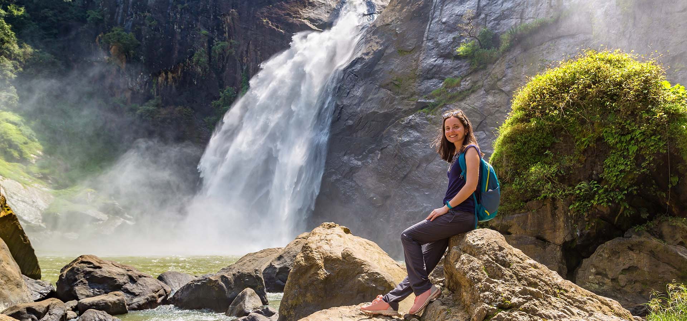

One of the most beautiful waterfalls in Sri Lanka, legendary for its misty spray and the powerful roar of the Badulu Oya.
Dunhinda Falls is frequently cited as the most beautiful waterfall on the island. Cascading down about 64 meters, its name "Dunhinda" literally means "Smoky Mist," describing the spectacular cloud of spray that hangs permanently at its base. The waterfall is fed by the Badulu Oya, a major tributary of the Mahaweli River.
The journey to the falls is an experience in itself - a scenic 1.5-kilometer jungle trek along a well-maintained path. Along the way, you'll hear the distant roar of the water and cross the "Kuda Dunhinda" (Little Dunhinda), a smaller but equally charming waterfall. Reaching the main observation deck, you're greeted by the full power of Dunhinda, where the sheer volume of water and the rhythmic energy of the Uva highlands create a truly unforgettable natural spectacle.
Back to Badulla Hub